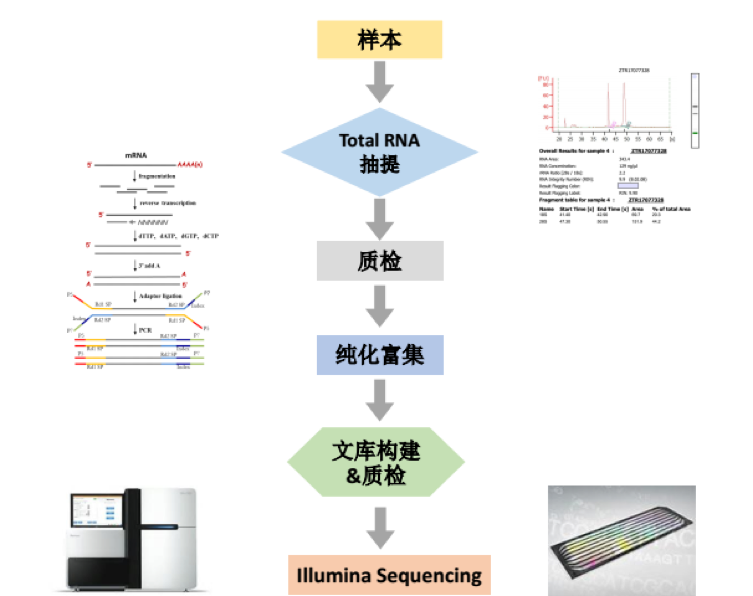
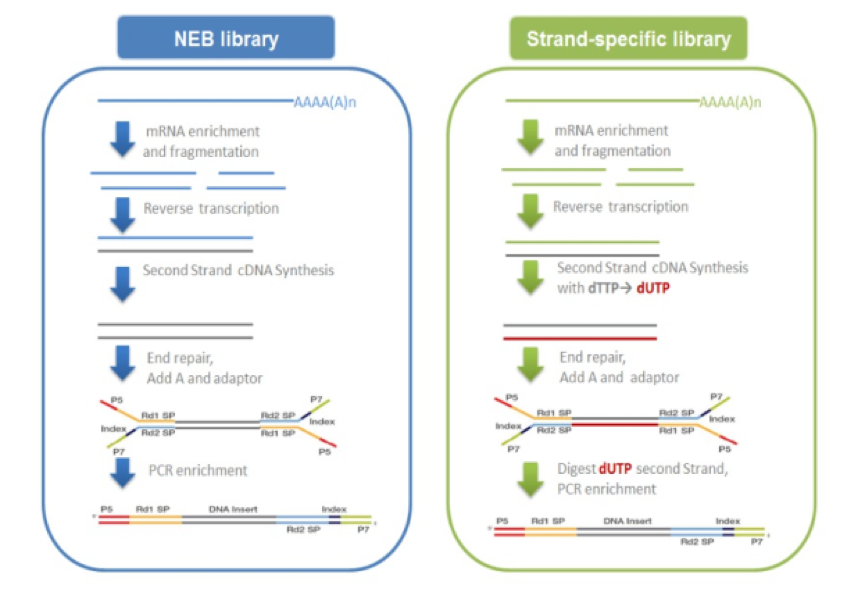
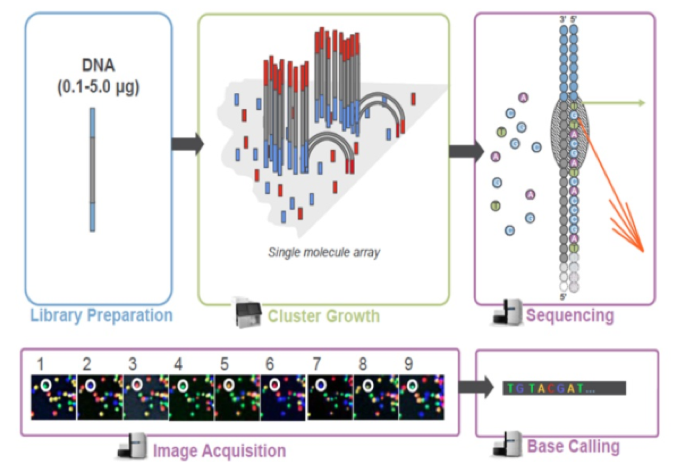

一、项目概览
1. 建库测序流程
从RNA样品到最终数据获得，样品检测、建库、测序每一个环节都会对数据质量和数量产生影响，而数据质量又会直接影响后续信息分析的结果。为了从源头上保证测序数据的准确性、可靠性，嘉因生物对样品检测、建库、测序每一个生产步骤都严格把控，从根本上确保了高质量数据的产出。流程图如
图1所示：

图1.1 建库测序流程示意图
1.1 Total RNA样品检测
Total RNA样本的检测方法主要包含以下4种：
- 琼脂糖凝胶电泳分析RNA降解程度以及是否有污染;
- Nanodrop检测RNA的纯度（OD260/280比值）;
- Qubit对RNA浓度进行精确定量;
- Agilent 2100精确检测RNA的完整性;
1.2 文库构建和质检
mRNA的获取主要有两种方式：一是利用真核生物大部分mRNA都带有polyA尾的结构特征，通过Oligo(dT)磁珠富集带有polyA尾的mRNA。二是从总RNA中去除核糖体RNA，从而得到mRNA。随后在NEB Fragmentation Buffer中用二价阳离子将得到的mRNA随机打断，按照NEB普通建库方式或链特异性建库方式进行建库。
NEB普通建库：以片段化的mRNA为模版，随机寡核苷酸为引物，在M-MuLV逆转录酶体系中合成cDNA第一条链，随后用RNaseH降解RNA链，并在DNApolymerase I 体系下,以dNTPs为原料合成cDNA第二条链。纯化后的双链cDNA经过末端修复、加A尾并连接测序接头(1)，用AMPure XP beads筛选200bp左右的cDNA，进行PCR扩增并再次使用AMPure XP beads纯化PCR产物，最终获得文库。建库原理如下
图1.2左所示。
链特异性建库：逆转录合成cDNA第一条链方法与NEB普通建库方法相同，不同之处在于合成第二条链时，dNTPs中的dTTP由dUTP取代，之后同样进行cDNA末端修复、加A尾、连接测序接头和长度筛选，然后先使用USER酶降解含U的cDNA第二链再进行PCR扩增并获得文库。链特异性文库具有诸多优势，如相同数据量下可获取更多有效信息；能获得更精准的基因定量、定位与注释信息；能提供反义转录本及每一isoform中单一exon的表达水平。建库原理如下
图1.2右所示。

图1.2 文库构建流程示意图
文库构建完成后，先使用Qubit2.0进行初步定量，稀释文库至1ng/ul，随后使用Agilent 2100对文库的插入片段长度（insert size）进行检测，insert size符合预期后，使用Q-PCR方法对文库的有效浓度进行准确定量（文库有效浓度 ＞2nM），以保证文库质量。
1.3 上机测序
库检合格后，把不同文库按照有效浓度及目标下机数据量的需求pooling后进行Illumina HiSeq测序。测序基于边合成边测序（Sequencing by Synthesis)的原理，在序的flow cell中加入四种荧光标记的dNTP、DNA聚合酶以及接头引物进行扩增，在每一个测序簇延伸互补链时，每加入一个被荧光标记的dNTP就能释放出相对应荧光，测序仪通过捕获荧光信号，并通过计算机软件将光信号转化为测序峰，从而获得待测片段的序列信息。测序过程如图1.3所示：

图1.3 Illumina HiSeq测序流程示意图